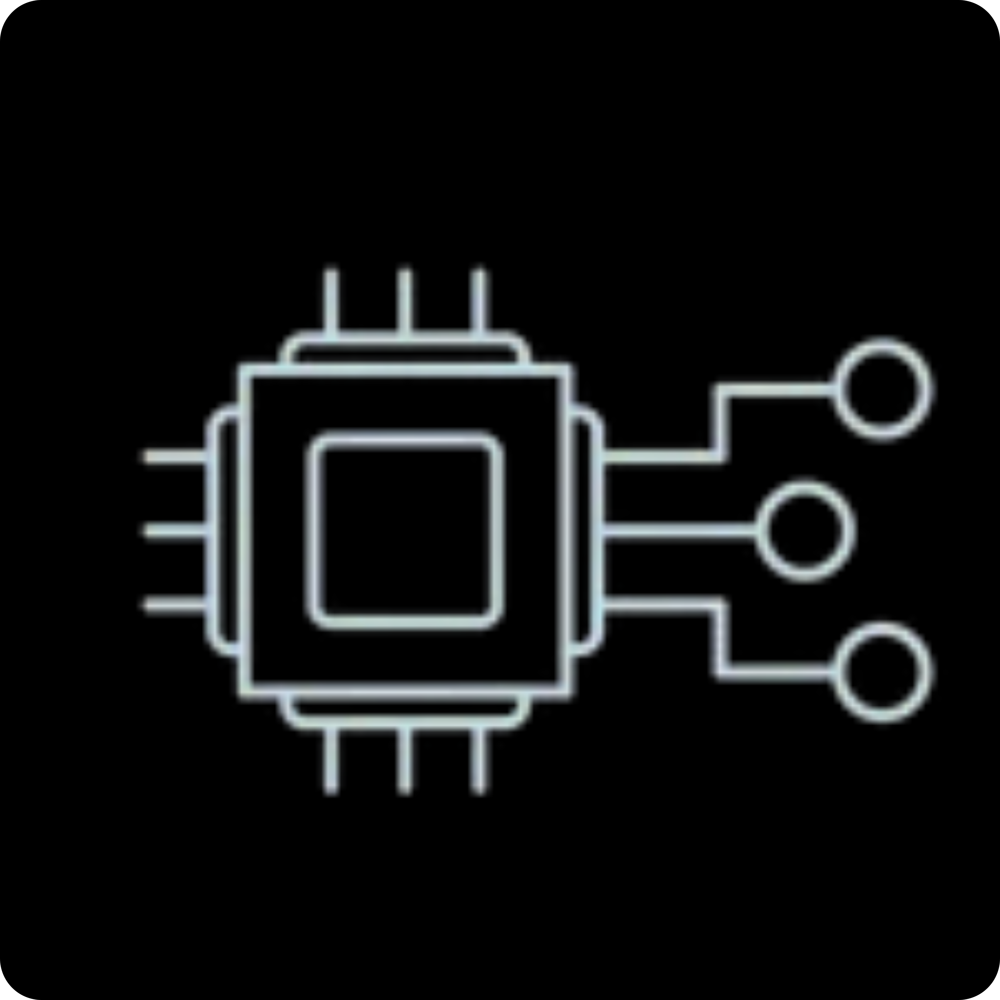

Mechatronics • Robotics • Soft Robotics • UAV
Le Hai Trung
VinUniversity, Hanoi, Vietnam
I am a final-year Mechanical Engineering undergraduate focused on robotics and mechatronics. I build systems that combine sensing, actuation, control, and real-world deployment across soft robotics, humanoid-hand teleoperation, autonomous UAVs, and LiDAR-based mapping.

About me
- Final-year Mechanical Engineering undergraduate
- VinUniversity 2023–2027
- VinUni Biorobotics Lab
About
Technical profile
Field of Interest
I am especially interested in robotics and mechatronics, soft robotics, UAV autonomy, robot perception, mapping and navigation, and control systems. My work is driven by building practical robotic systems that connect sensing, actuation, control, and real-world deployment.
Skills

UAV Integration

Robot Operating System

Raspberry Pi

Arduino / ESP32

Soft Robotics

MATLAB

Mechanical Design

Simulation

Mechatronic System


Experience
Research and Engineering
Academic
[03/2025 - Present]
Research Assistant at VinUni Biorobotics Lab
Developing research prototypes involving soft-muscle actuation, tendon mechanisms, soft sensing, teleoperation, experimental validation, and technical writing.
[10/2023 - 02/2025]
Undergraduate Researcher at VinUni Biorobotics Lab
Contributed to rehabilitation robotics, soft mechanisms, actuator fabrication, experimental setup development, and technical communication.
Industry
[06/2025 - 10/2025]
UAV Engineering Intern at Phenikaa-X
Designed a battery-holder retrofit for a Holybro X500 platform, implemented PX4 offboard velocity control for GPS-denied flight, supported AprilTag-based localization and camera deployment, and participated in real-world testing as a test pilot.
Contact
Let’s connect
I am open to research collaboration, graduate-study opportunities, and conversations about robotics, autonomous systems, soft robotics, and mechatronic design.